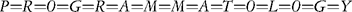

The materials reviewed in this bibliography have been carefully selected as a sampling of resources covering a wide range of genres, methods, perspectives, and literary traditions in digital literary studies. Limited to resources in English, these have been chosen because each resource is freely available online with few or no areas of restricted access and represents best practices reflecting time-honored scholarly traditions and current digital standards. In particular, each resource:
• contains rich, multi-layered content that is current and has been thoroughly referenced and vetted by the creators and/or the appropriate scholarly community;
• clearly reflects a guiding principle or theory that is in keeping with current standards of scholarly literary practice (both traditional and digital);
• uses the digital medium to facilitate a discovery-based, synthesized experience with its content, above and beyond providing access to digitized texts or a compilation of resources. These resources are essentially digital: each, at some level, engages with literature in ways not possible before the digital age.
This annotated overview is divided into three main sections based on content: Digital Transcriptions and Images; Born-Digital Texts and New Media Objects; and Criticism, Reviews, and Tools.
One of the primary goals of digital literary resources has been to provide access to large bodies of related texts in a systematic way. In addition to providing access to digital transcriptions and images, the digital research archives included here present edited and encoded texts, contextual essays, and tools that help users discover new texts or make new connections within and between familiar ones. The exemplary nature of all these resources is reflected in the way that they examine or expose the differences in the very nature of analog and digital resources and research.
One key feature shared by some of these resources is a unique interface for discovery and analysis of the comprised materials. For example, many resources allow for easy navigation through side-by-side comparisons of text, multimedia objects, translations, commentary, and notes. Among the resources that have emphasized alternative viewing choices are The Rossetti Archive, Princeton Dante Project, Internet Shakespeare Editions, and Hap Hazard. In addition to reading interfaces, some projects offer advanced searching capabilities that are designed around textual features (The Rossetti Archive, Princeton Dante Project, The Blake Archive). Still other resources emphasize the physical organization of the original work through hypertext navigation as in The Early Stuart Libels and The Electronic Edition of John Ruskin's Modern Painters I.
The resources listed here also emphasize the means by which the digital medium may be used to convey particular interpretations of text in novel ways. Both Mark Twain In His Times and Uncle Tom's Cabin & American Culture: A Multimedia Archive underscore a particular "interpretive" stance through interactive exhibits. These features highlight key themes such as the cultural impact of Uncle Tom's Cabin on race relations and book publishing or how the persona of "Mark Twain" was "created and defined, marketed and performed, reviewed and appreciated." In The Thomas MacGreevy Archive interpretation is guided through the "Browse" menu through which a user may explore "the life, writings, and relationships" of the author with and beyond his published texts through various media and from different perspectives. Other resources combine different types of materials to build a fuller context for their research. Resources such as The Decameron Web, The Walt Whitman Archive, and Jónas Hallgrímsson: Selected Poetry and Prose are not limited to primary texts; these combine textual, visual, and audio features to facilitate the exploration of the life and works of their subjects.
Many of these resources explicitly address the digital scholarly community through research articles, scholarly tools, and forums for scholarly discussion. From the "samplers" of the Dickinson Electronic Archives — digital articles that serve as examples of "what can be accomplished when shaping critical arguments via new media" — to the extensive documentation of editorial choices, digital design, and tools for literary analysis in The Blake Archive to the robust suite of user-oriented features in Romantic Circles (including a weblog and MOO alongside more traditional outlets for scholarly discussion), these resources not only provide access to primary materials but serve as an outlet for shaping the discipline through scholarly debate, presentation of research, and the establishment of practices and methods.
Finally, many of these resources bring together different communities in a new collaborative scholarly space. Literary scholars and libraries have long collaborated to provide easily accessible and thoughtfully collected resources to the larger community (The Library of Southern Literature, British Women Romantic Poets, and Beowulf: A New Translation for Oral Delivery). Other new bonds are being forged between traditional academic — the Early English Texts Society (EETS) — and digital literature communities through resources like Ancrene Wisse Preface. Likewise, The Diary of Samuel Pepys is an innovative weblog-based re-creation of the 1660 text that reflects a collective work-in-progress in which regular user comments provide for historical context and editorial analysis.
<http://www.tei-c.org.uk/Projects/EETS/>
Editor: Bella Millet; Technical Assistance: Lou Burnard and Sebastian Rahtz; Design Input: Scott Agass Ancrene Wisse was a guide written in the thirteenth century for "female recluses" in the West Midlands of England. This digital edition comprises the preface to the work. All texts are encoded in XML using the TEI (Text Encoding Initiative) markup schema. A simple full-text search function is available for the text which is available both as Middle English and modern English translation for comparison viewing. Manuscript facsimiles, critical apparatus, and textual commentary are also available.
<http://digicoll.library.wisc.edu/Literature/subcollections/RinglBeowulfAbout.shtml>
Translator: Dick Ringler; Encoder: Peter C. Gorman
An original translation of Beowulf created by Dick Ringler and published through the University of Wisconsin Library's digital collection, this edition contains scholarly apparatus, introduction, notes, and commentary encoded with TEI. The edition is available as a part of Wisconsin's digital collections online.
<http://digital.lib.ucdavis.edu/projects/bwrp/>
Founding Editor: Nancy Kushigian; Managing Editor: Charlotte Payne
This resource aims to create an archive of scholarly texts of poetry by British and Irish women written during the Romantic period, between 1789 and 1832. Texts are chosen which are of interest to the scholarly community from the Kohler Collection at the University of California, Davis.
<http://www.rossettiarchive.org/>
General Editor: Jerome McGann
The Rossetti Archive features a broad spectrum of Rossetti's works including pictures, poems, and prose in both transcribed, translated, and manuscript forms. These primary texts are presented with editorial commentary, notes, and glosses.
<http://www.brown.edu/Departments/Italian_Studies/dweb/dweb.shtml>
Coeditors: Michael Papio and Massimo Riva; Director: Christiana Fordyce
The Decameron Web explores the life of Boccacio and the historical and cultural context in which he created The Decameron. A text search of the XML version provides access to the primary text, and an advanced site search provides access to the secondary contextual materials.
Editor: Phil Gyford
Samuel Pepys's 1660 diary is re-created in the digital realm as a weblog updated with new entries that correspond to the date and month of Pepys's original text. The weblog format allows users to add annotations and folksonomic tags (used for browsing) to the text.
<http://www.emilydickinson.org>
Executive Editor: Martha Nell Smith
The primary focus of the Dickinson Electronic Archives are writings that Emily Dickinson "published" via distribution through the postal service, through family, through friendly courier, and in handmade books. Resources include images and transcriptions of letters and poetry manuscripts, writings by members of her family, sound recordings of current poets reading Dickinson's work, other secondary scholarly materials, and a discussion space.
<http://www.earlystuartlibels.net/htdocs/index.html>
Editors: Alastair Bellany, Andrew McRae
Early seventeenth-century political poetry is the focus of Early Stuart Libels. More than 350 poems, many of which had not been previously published, are included in the edition highlighting a range of traditional libel such as satire and invective as well as more orthodox anti-libel pieces. The texts are searchable by author and source and each poem is fully annotated in both an HTML hypertext and PDF edition.
<http://www.lancs.ac.uk/fass/centres/ruskin/empi/>
Editors: Lawrence Woof, Ray Halsam; Software Director: Roger Garside
The Electronic Edition of John Ruskin's Modern Painters I presents a digital edition of the first volume of Ruskin's five-volume work. Reading editions are presented as high-resolution facsimiles while transcribed texts are used to create annotations and hypertext links between images of the texts. Scholarly apparatus include information about Ruskin and his times and the impact and reception of Modern Painters.
Coordinating Editor: Michael Best
The goal of the Internet Shakespeare Editions is to "create and publish works for the student, scholar, actor, and general reader." These take the form of annotated texts of the plays and other multimedia contextual materials about Shakespeare's life and works.
<http://www.english.cam.ac.uk/ceres/haphazard/>
Editor: Andrew Zurcher
Part of COPIA, the CERES (Cambridge English Renaissance Electronic Sources) Online Publications Inter-Active, Hap Hazard features heavily annotated resources for the study of Edmund Spenser including his letters and the text of A View of the Present State of Ireland. Other contextual supplementary resources provide insight particularly into the study of manuscript materials relating to Spenser's writing.
<http://www.library.wisc.edu/etext/Jonas/>
Editor and Translator: Dick Ringler; Developer: Peter C. Gorman
This site comprises poetry and prose of the Icelandic author along with biographical and scholarly resources. Fifty works of poetry and prose by Hallgrímsson with images of manuscripts and first editions, a biographical sketch, commentary, photos, and a bibliography make up the primary resources.
<http://docsouth.unc.edu/southlit/index.html>
Scholarly advisers: Dr. Robert Bain, Dr. Joseph M. Flora, Dr. William L. Andrews; Digitization Librarian: Natalia Smith The Library of Southern Literature focuses on 100 works of Southern literature published before 1920 as part of the larger University of North Carolina libraries initiative Documenting the American South, which strives to make available primary materials from the university's southern collections in digitized form (text, images, and audio).
<http://etext.lib.virginia.edu/railton/index2.html>
Writer and Director: Stephen Railton
The creator of Mark Twain in His Times argues that the author's career can best be understood through contemporary contextual evidence. To this end, the site provides access and searching capabilities into a mix of primary and secondary materials including images of manuscripts, contemporary reviews, articles, advertisements, the sales prospectus for and editions of Twain's works among many other objects.
<http://etcweb.princeton.edu/dante/pdp/>
Editor: Robert Hollander
Offering a hypertextual interface for Dante's Commedia and other minor works in English and Italian as well as numerous multimedia features, this project also offers lectures and commentary on Dante and his works by Robert Hollander.
General Editors: Neil Fraistat, Steven E. Jones, and Carl Stahmer
Refereed scholarly content pertaining to Romantic period literature and culture is the main feature of Romantic Circles. This site comprises both primary and secondary materials and space for scholarly discussion and information exchange.
General Editor: Susan Schreibman
The Thomas MacGreevy Archive facilitates the exploration of "the life, writings, and relationships of the Irish poet and critic Thomas MacGreevy." The archive combines fully searchable, transcribed texts of articles by and about MacGreevy, with letters from MacGreevy and his contemporaries, a bibliography, biography, timeline, image gallery, and biographical database of people associated with his work.
<http://www.iath.virginia.edu/utc/>
Director: Stephen Railton
This collection's central theme is based on exploring interpretive modalities of Uncle Tom's Cabin. Many interpretive materials are included, with images from various editions of the book including articles and newspaper clippings, advertisements, playbills, and illustrations from the time period.
<http://www.whitmanarchive.org/>
Editors: Ed Folsom, Kenneth M. Price
The Walt Whitman Archive presents materials related to every poem in Leaves of Grass, including those poems that were never published, along with photographs and audio of what is thought to be Whitman's voice. Contemporary reviews and works by Whitman disciples are featured along with secondary scholarly materials about the author.
<http://www.blakearchive.org/>
Editors: Morris Eaves, Robert Essick, and Joseph Viscomi
The William Blake Archive includes fully searchable and scalable electronic editions of all of Blake's nineteen illuminated works replete with contextual information and diplomatic transcriptions. A searchable electronic version of the standard printed edition, and other essential scholarly information, plus representations of Blake's works in other artistic media are also included.
As diversified as any genre of literary works, the "born-digital" resources included here take on an amalgamation of various programming languages and electronic forms presented in a variety of digital environments. All of these resources are currently in use and include recent additions by the editors and authors. Some of the material associated with each entry is archived on the listed URL and some is linked from the site, but all of these resources function as thoughtful representations of a particular perspective or artist of digital media and literature. For example, some entries function much like literary journals and are associated with various works and artists. Arras, Brian Kim Stefans's contribution to new media poetry and poetics, is "devoted to exploring how digital technology has impacted the field of experimental poetics"; blackice showcases work "modeled after the great avant-garde literary writing of past" by "publishing some of the most offensive, sexy, and formally adventurous writing of the last fifteen years"; and the Electronic Literature Organization (ELO) is committed to providing access to a wealth of archived electronic literature and also to the Preservation, Archiving, and Dissemination (PAD) project (which seeks to "maintain accessibility, encourage stability, and ensure availability of electronic works" for future readers).
Other entries function as author sites that archive, link to, and comment on pieces by particular authors whose works have helped elevate digital literature to its current status as a well-regarded literary genre. Deena Larsen, Shelley Jackson, Stuart Moulthrop, M. D. Coverley, and Mark Amerika represent some "first wave" electronic literature with hypertext pieces such as Amerika's Grammatron, Jackson's "My Body," Larsen's "Disappearing Rain," Moulthrop's award-winning hegirascope, and Coverley's many pieces of early fiction in now-archived digital journals such as Beehive (<http:// beehive.temporalimage.com/) and subscription-based Web Conjunctions (<http:// www.conjunctions.com/webconj.htm). "Second Wave" electronic literature is represented by the flash pieces of Stefans, Talan Memmott, and Jason Nelson (secrettech-nology and Heliozoa); JavaScript work by Stuart Moulthrop; collaborative new media poems directed by Thomas Swiss; and the game narratives of Michael Mateas and Andrew Stern. Other perspectives include John Cayley's work with programmable, digital movies (P=R=O=G=R=A=M=M=A=T=O=L=O=G=Y), Nick Montfort's experiments with interactive fiction, and mez's "mezangelle" texts.
Author: Mark Amerika
Named a "Time Magazine 100 Innovator" as one of the most influential artists, scientists, entertainers, and philosophers into the twenty-first century, Amerika is now known for performances and demonstrations on all aspects of new media art and theory including live multimedia performances in which he produces narrative by integrating video sampling and experimental music with on-stage, live writing. His site includes links to all his work, past and present.
Author: Brian Kim Stefans
The site includes links to the author's own work in Flash, Shockwave, Director, JavaScript, and hypertext (including his best-known piece "Dreamlife of Letters"); it also includes Stefan's "gallery of digital poetry," annotated links to digital literary resources by other writers and artists who are "devoted to exploring how digital technology has impacted the field of experimental poetics," and use "multi-media, interactivity, algorithmic processes, and digital typefaces" to produce poetry and criticism.
<http://bailiwick.lib.uiowa.edu/swiss/>
Author: Thomas Swiss
Currently a professor at the University of Iowa, Swiss's work includes scholarly criticism and new media poems. In keeping with Swiss's theory that web-based poetry has its "roots in the shared notion of community that was integral to the development of internet," most of these Flash pieces are created by collaborative teams and include designs by Motomichi Nakamura, Michael Cina, and Skye Giordano and audio by Aaron Day, Seb Chevrel, and Randy Schoen.
<http://www.altx.com/profiles/>
Publisher: Mark Amerika; Editors: Mark Amerika, Matt Samet
An integral section of the Alt-X network (which also includes the electronic book review), blackice includes electronic fiction and poetry, and literary criticism about electronic literature.
M. D. Coverley (aka Marjorie Coverley Luesebrink)
A professor at the School of Humanities and Languages, Irvine Valley College, Coverley includes on her site links to many of her award-winning hypertexts published in new media magazines and journals throughout the 1990s. She also includes her critical, academic work and excerpts from her longer fiction, Califia and Egypt: the Book of Going Forth by Day.
ELO President: Thomas Swiss
The Electronic Literature Organization (ELO) is a nonprofit organization established "to promote and facilitate the writing, publishing, and reading of electronic literature." This site features a database-driven directory of electronic literature maintained by authors; information on the ELO coordination of readings and outreach events across the US including information about the Preservation, Archiving, and Dissemination (PAD) project.
<http://www.interactivestory.net/>
Authors: Michael Mateas, Andrew Stern
Winner of many game awards, Façade is "an artificial intelligence-based art/ research experiment in electronic narrative" that was created by integrating artistry and artificial intelligence technologies. With this collaboration, Mateas and Stern have succeeded in engineering an environment in which a real-time 3D virtual world is inhabited by both AI characters and the player who experiences this text from the first-person perspective.
Author: Jason Nelson
This site features over sixteen pieces of this award-winning author's hyper-media work from 2000–2005, including e-literature and poetry that incorporates hypertext, Flash, various game interfaces, sound, and content of high literary quality.
Author: Noah Wardrip-Fruin
This author (co-editor with Nick Montfort of The New Media Reader) includes news and links to his new media work (both creative and scholarly) on his site. Here the reader finds The Impermanence Agent (1998–2002), which (created with Adam Chapman, Brion Moss, and Duane Whitehurst) is a web agent that "monitors" a reader's browser and then uses this material to create a different story for each reader. The site also includes other literary digital works and links to exhibitions as well as current events and news.
<http://www.ineradicablestain.com/>
Author: Shelley Jackson
Jackson (known for her seminal hypertext Patchwork Girl) includes excerpts from and explanations of her work, including her most recent work Skin: A Mortal Work Of Art in which the author commissions "readers" to tattoo a word on their skin in "book font." The site also comprises much of Jackson's critical work such as "Stitch Bitch" and two of her major fictional works "My Body" and "The Doll Games."
Author: Deena Larsen
Larsen (author of the hypercard work Marble Springs and the hypertext Samplers) includes links to all aspects of her work: syllabi, writing exercises, articles, Flash collaborations and imagery, a matrix poem, and structural works (which explore a structural theme using layout, imagery, words, and navigation). Her works include well-known pieces such as the Flash piece "Firefly" available from the archived site Poems that Go (<http://www.poemsthatgo.com/>).
<http://www.memmott.org/talan/>
Author: Talan Memmott
This site serves as both an archive and a portal to Memmott's new media works including poetry, sound work, and Flash artistry (including his well-known Lexia to Perplexia — a piece which has received much critical attention from theorists). It also includes his critical work, interviews, and reviews.
<http://www.hotkey.net.au/~netwurker/>
Author: mez (a.k.a. Mary Anne Breeze)
This site features the work of the award-winning new media artist mez who focuses on examining language by creating and using her "mezangelle" language (a combination of natural language and code). Major works include "pro][tean][.lapsing.txts," "_][s][hut][ters][of d.funct meat_," and "The data][h!][bleeding T.ex][e]ts" among others. The site also includes an introduction on reading, especially reading the mezangelle text.
Author: Nick Montfort
A programmer and writer, Montfort is best known for his work with interactive fiction such as his collaborative piece Mystery House Taken Over (with Dan Shiovitz and Emily Short) and his book of scholarly criticism Twisty Little Passages: An Approach to Interactive Fiction. The site also includes his most recent work Book and Volume, the award-winning work Ad Verbum, presentations, reviews, and critical articles.
<http://iat.ubalt.edu/moulthrop/>
Author: Stuart Moulthrop
Author of Victory Garden and a professor at the School of Information Arts and Technologies in the Yale Gordon College of Liberal Arts at the University of Baltimore, Moulthrop's most recent work focuses on "Instruments and Playable Texts" (reflected in a special 2006 issue of Iowa Review Web of which he was guest editor). "Pax" is his 2003 piece in which he explores these same issues "of what else we might play in addition to games." His site also includes syllabi, critical essays, and many of his hypertext work from the 1990s.

Author: John Cayley
Winner of the Electronic Literature Organization's first annual award in digital poetry in 2001, Cayley could be termed the "digital writer's digital writer" for his innovative use of "text movies" which combine literature and programmable technology (such as QuickTime) and his critical work on new media art in his essays "literal art" and "the code is not the text (unless it is the text)." He is also a frequent object of and contributor to scholarly, critical debates on the electronic book review.
The following list comprises resources that function in a secondary capacity to the texts presented in the first two sections of this bibliography. The primary goal of these resources is to reflect on, engage with, and explore electronic texts of both transcription-based resources and born-digital literary objects. Many of these resources are sponsored and supported by established digital and literary associations and organizations, such as the Association of Literary Scholars and Critics (The Valve); the Alliance of Digital Humanities Organizations (Digital Humanities Quarterly); the Society for Digital Humanities/Société pour l'étude des médias interactifs (Text Technology; McMaster University), and the PEN American Center (Words Without Borders). Other resources were created and are maintained by other traditional cultural institutions such as the New Museum of Contemporary Art (Rhizome.Org), The New Media Group in English at George Mason University (://English Matters), Universities such as Nottingham Trent University (trAce Online Writing Centre) and the Graduate College and the Department of English at the University of Iowa and the School of Journalism and Mass Communication at the University of Minnesota (The Iowa Review Web). Others (Web Del Sol and Alt-X's electronic book review) were created by "born digital" organizations.
Also included in this section are digital tools which are meant to aid scholarly interpretations of literary texts through the digital medium. Some are built to "crunch" text in the manner of traditional computational linguistics, whether it be through creating co-occurrence and distribution lists with a tool like HyperPo or through determining "morphological, lexical, prosodic, and narratological criteria" with WordHoard. In addition to these functions, TAPoR (Text Analysis Portal for Research) provides a user "workbench" where the user can login, find help documentation about text analysis in general, upload her texts, use a variety of any tool the tool creators have made available to the TAPoR open-source environment, and save work for the next visit. Other types of tools facilitate the user's analysis and display of encoded XML and SGML texts. The resources Juxta and the Versioning Machine allow users to compare, collate, and display variant versions of digital texts while the teiPublisher facilitates the user's ability to create a searchable digital text repository, including metadata ontology development and indexing that may be displayed on the web. Still more tools included in this section include resources that incorporate innovative representations of texts that facilitate interpretive strategies unimaginable in the traditional text environment. The resources include single digital editions that incorporate image comparison (John Lydgate's Fall of Princes and Extracts from the Diary of Robert Graves) and an interactive timeline (Absalom! Absalom!). Other "tools" represented here are analysis tools incorporated into multiple-text archives like GIS plotting in The Perseus Project and an innovative visual interpretation of an entire text on a single screen in TextArc. All of the tools listed here are the creations of well-regarded institutions associated with the highest digital literary standards, traditions, and innovative practices and in many cases source code is also made available.
All of these sites maintain the goal to respond to, reflect, and engage the digital literary community at large. These resources include commentary on digital literary issues through more formal scholarly critiques and debates (Digital Humanities Quarterly, electronic book review, Grand Text Auto, Postmodern Culture, Text Technology, and the Valve) and informal book reviews and exchanges (trace, Web Del Sol, and Words without Borders). In addition, some of these digital resources have a focus on primary materials usually in the form of electronic literature, interviews, and teaching modules (:// English Matters, The Iowa Review Web, trAce, and Rhizome.org). Beyond presenting and commenting on digital literature, these resources use the digital medium as a platform for exchange, whether the implementation is a weblog (The Valve), an exhibition or installation (Rhizome.org), or a message board (ebr), and most of these sites use underlying databases and innovative interface designs to augment both the access to and the interaction with their content.
<http://www.digitalhumanities.org/dhq/>
Editor in Chief: Julia Flanders
Produced by ADHO (the Alliance of Digital Humanities Organizations), the DHQ is an experiment in community journal publication committed to "experimenting with publication formats and the rhetoric of digital authoring," collaborating with a variety of scholarly groups and publications in a variety of languages, and using open standards. Its peer-reviewed materials include scholarly articles, editorials and feature articles, experiments in interactive media, and reviews of born-digital texts and tools.
<http://etext.lib.virginia.edu/railton/absalom/index2.html>
Creators: Stephen Railton, Will Rourk
This resource, supported by the University of Virginia's Institute for Advanced Technology in the Humanities (IATH), is a Flash-based timeline of the major events in William Faulkner's novel Absalom, Absalom! Based on Faulkner's own chronology (a manuscript of which is featured), the tool is primarily intended as a teaching resource to help readers become acquainted with the events of the novel through an interface that allows users to navigate these events in various ways.
<http://www.electronicbookreview.com/>
Publisher: Mark Amerika; Editor: Joseph Tabbi
This resource's primary purpose is to host debates on electronic textuality, cyber-culture, and digital design literacy in scholarly and critical writing by some of today's leading scholars in these various fields. The threads are called "first person," "techno capitalism," "end construction," "music, sound, noise," "webarts," "writing under constraint," "internet nation," "image ± narrative," "electro poetics," "critical ecologies," and "writing (post) feminism."
<http://chnm.gmu.edu/ematters/>
New Media Group in English Director: Devon Hodges
Organized around a central theme, each issue contains scholarly articles, exhibits, electronic poetry, and teaching modules to explore new genres of digital literature and poetry. Each issue is produced by the New Media Group in English
<http://web.uvic.ca/hrd/lydgate/>
Creators: Undine Bruckner, Martin Holmes
This experimental resource features an interface that allows users to compare a manuscript facsimile and a transcription of an excerpt from John Lydgate's Fall of Princes with side-by-side comparison and navigation within lines of both the image and the text. It is supported by the Humanities Computing and Media Center at the University of Victoria.
<http://web.uvic.ca/hrd/graves/>
Creators: Undine Bruckner, Martin Holmes
This resource uses several extracts from the diary of Robert Graves to experiment with integrating multiple texts into one display as an attempt to encode a multilayered document like a diary with publicly available DTDs. The finished interface includes images and annotations in addition to the text of the diary and other texts that were enclosed with the original entries.
<http://grandtextauto.gatech.edu/>
Contributors: Mary Flanagan, Michael Mateas, Nick Montfort, Scott Rettberg, Andrew Stern, Noah Wardrip-Fruin With contributors such as Flanagan (software artist, technoculture theorist, and activist), Mateas (professor at Georgia Tech in the School of Literature, Communication, and Culture and in the College of Computing), Montfort (poet and author of interactive fiction and other literary works for the computer), Rettberg (professor of new media studies in the literature program at Richard Stockton College of New Jersey), Stern (designer, writer and engineer of AI-based interactive characters and stories), and Wardrip-Fruin (professor at the University of California, San Diego), this weblog is updated frequently with scholarly and artistic critiques and announcements on many topics of interest to the digital literary community.
Designer and writer: Stéfan Sinclair
HyperPo is a text exploration and analysis program that facilitates creating frequency lists of characters, words and series of words, KWIC (Keyword in Context), co-occurrence and distribution lists and comparing data from multiple texts while using external resources such as Google and other content repositories.
<http://www.uiowa.edu/~iareview/mainpages/tirwebhome.htm>
Advising Editor: Thomas Swiss; Editor and Programmer: Benjamin Basan
This site features electronic literature, a variety of other types of experimental writing and art, author interviews and scholarly articles and essays.
<http://www.patacriticism.org/juxta/>
Applied Research in Patacriticism team at the University of Virginia
Juxta is a tool for collating and analyzing text. Users have access to various methods of visualization such as "a heat map of textual differences and a histogram that can expose the filtering results." In addition, users may save collations and annotations for future use.
<http://www.perseus.tufts.edu/>
Editor-in-chief: Gregory Crane
This resource, affiliated with the Department of the Classics at Tufts University, focuses on creating tools to facilitate the access to and the presentation and analysis of ancient, classical and Renaissance texts as well as art and architectural images. Some of these tools include word searches, atlas tools for creating maps, tools for morphological analysis and generating tables of contents, and a virtual reality interface.
Executive Director: Lauren Cornell
Literary artworks are just one factor of this multifaceted archive, which includes new featured resources, online exhibitions and installations, archives such as "Artbase" (a database of new media resources by various international artists) and "Textbase" (which includes the site's archived conversations, commentary and listings of events and opportunities from the past decade), and services such as a calendar of events, employment, grant, and fellowship opportunities in new media work.
<http://tapor.humanities.mcmaster.ca/home.html>
Project Leader: Geoffrey Rockwell
This portal is a gateway to resources and tools "for sophisticated analysis and retrieval, along with representative texts for experimentation." A key feature is a user-interface that allows for uploading, deleting, and storing texts to an individual user account. In addition, users can store settings such as "favorite" tools and text analysis results alongside access to a more global interface that represents the "best practices of experienced computing humanists available to the larger humanities research community." Based at McMaster University, this project comprises a network of six Humanities computing centers in Canada: McMaster, University of Victoria (in collaboration with Malaspina UC), University of Alberta, University of Toronto, Université de Montreal (law) and University of New Brunswick.
<http://teipublisher.sourceforge.net>
Creators: Amit Kumar, Susan Schreibman, Stuart Arneil, Martin Holmes, John A. Walsh Building on the native XML database eXist and the text engine search library Lucene, this modular tool is designed to help repository managers with limited technical knowledge manage their repositories with modules that facilitate uploading and deleting, storing, searching, browsing, and displaying TEI documents on the web in HTML and PDF among other formats.
<http://texttechnology.mcmaster.ca/>
Co-editors: Geoffrey Rockwell and Alexandre Sévigny
The "journal of computer text processing," TT is meant for academics and professionals who are interested in articles devoted to computer-assisted text acquisition, creation, analysis, editing, or translation. It is the journal of the Society for Digital Humanities/Société pour l'étude des médias interactifs.
Creator: W. Bradford Paley
This tool allows a user to display a text and make visual connections between individual words. It makes explicit concordances while also serving as an index and summary tool. It uses human visual processing to reveal patterns and concepts in textual works. Its designer sees it as a complement to Statistical Natural Language Processing and Computational Linguistics.
Keith Jebb and Lesley McKenna] This site promotes "an accessible and inclusive approach to the internet with the focus on creativity, collaboration and training." Inviting writers to meet online and in person, trAce features an archive of new media writing, online courses, feature and scholarly articles, and a wide range of links to resources on the web at large.
Founder and Chief Editor: Michael Neff
This site functions as a portal to literary magazines, journals, and weblogs published and hosted at WDS and on the web at large, chapbooks by writers and poets, and feature columns.
<http://www.wordswithoutborders.org/>
Founding Editor: Alane Salierno Mason
This international literary journal contains pieces about and of international literature translated into English. It includes forums, fiction, book reviews, a weblog with a variety of regular contributors, and reflects collaborative scholarship on an international scale.
Editor: John Holbo
This resource comprises a literary weblog that seeks "to foster debate and circulation of ideas in literary studies and contiguous academic areas." The Valve features contributions by a range of authors on various subjects, a searchable archive of constantly updated entries/articles and reader comments, and online "Book Events" or ongoing reviews and discussions about featured books.
Founding Editor: Susan Schreibman
This tool, "designed by a team of programmers, designers, and literary scholars," allows for the display and comparison of multiple versions of texts by reconstructing multiple witnesses from a single XML-encoded document and displaying them, side by side, as individual documents with annotations and introductory materials. It is supported and maintained by Digital Collections and Research at the University of Maryland.
<http://wordhoard.northwestern.edu>
A joint project of the Northwestern University departments of English and Classics and NU-IT Academic Technologies WordHoard serves as "an application for the close reading and scholarly analysis of deeply tagged literary texts" through corpus linguistics techniques, which the user accesses through an interface designed for the non-technical user.